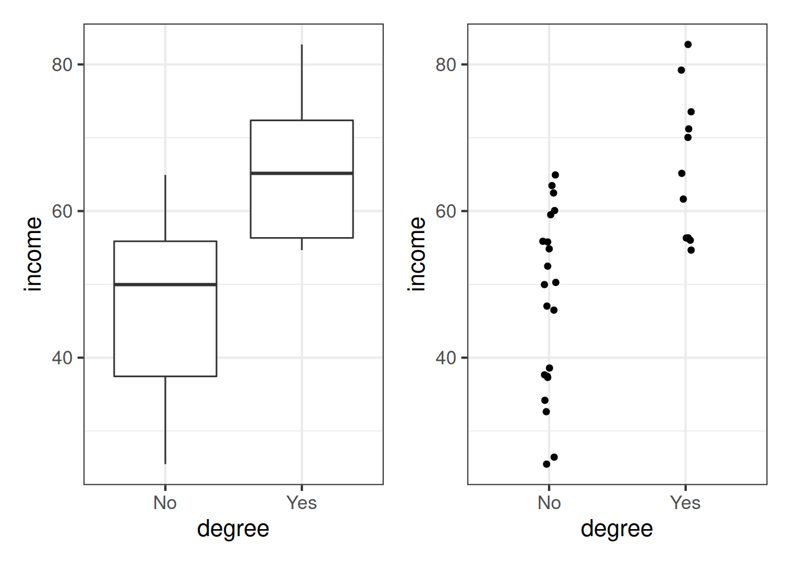

Understand the calculation and interpretation of the coefficient of determination.
Understand the calculation and interpretation of the F-test of model utility.
Understand how to standardize model coefficients and when this is appropriate to do.
Understand the relationship between the correlation coefficient and the regression slope.
What You Need
Be up to date with lectures
Have completed previous lab exercises
Required R Packages
Remember to load all packages within a code chunk at the start of your RMarkdown file using library(). If you do not have a package and need to install, do so within the console using install.packages(" "). For further guidance on installing/updating packages, see Section C here.
For this lab, you will need to load the following package(s):
tidyverse
patchwork
Lab Data
You can download the data required for this lab here or read it in via this link https://uoepsy.github.io/data/riverview.csv. Note: this is the same data as Lab 2.
Study Overview
Data recap
Riverview data codebook
Description
The riverview data come from (Lewis-Beck2015?) and contain five attributes collected from a random sample of \(n=32\) employees working for the city of Riverview, a hypothetical midwestern city in the US. The attributes include:
education: Years of formal education
income: Annual income (in thousands of U.S. dollars)
The following object is masked from 'package:dplyr':
group_rows
Rows: 32 Columns: 6
── Column specification ────────────────────────────────────────────────────────
Delimiter: ","
chr (2): gender, party
dbl (4): education, income, seniority, male
ℹ Use `spec()` to retrieve the full column specification for this data.
ℹ Specify the column types or set `show_col_types = FALSE` to quiet this message.
education
income
seniority
gender
male
party
8
37.449
7
male
1
Democrat
8
26.430
9
female
0
Independent
10
47.034
14
male
1
Democrat
10
34.182
16
female
0
Independent
10
25.479
1
female
0
Republican
12
46.488
11
female
0
Democrat
Setup
Setup
Create a new RMarkdown file
Load the required package(s)
Read the riverview dataset into R assigning it to an object named riverview
Solution
#Loading the required package(s)library(tidyverse)library(kableExtra)# Reading in data and storing to an object named 'riverview'riverview <-read_csv('https://uoepsy.github.io/data/riverview.csv')
Rows: 32 Columns: 6
── Column specification ────────────────────────────────────────────────────────
Delimiter: ","
chr (2): gender, party
dbl (4): education, income, seniority, male
ℹ Use `spec()` to retrieve the full column specification for this data.
ℹ Specify the column types or set `show_col_types = FALSE` to quiet this message.
Exercises
Question 1
Fit a linear model to investigate how income varies with years of formal education.
Rows: 32 Columns: 6
── Column specification ────────────────────────────────────────────────────────
Delimiter: ","
chr (2): gender, party
dbl (4): education, income, seniority, male
ℹ Use `spec()` to retrieve the full column specification for this data.
ℹ Specify the column types or set `show_col_types = FALSE` to quiet this message.
head(riverview)
# A tibble: 6 × 6
education income seniority gender male party
<dbl> <dbl> <dbl> <chr> <dbl> <chr>
1 8 37.4 7 male 1 Democrat
2 8 26.4 9 female 0 Independent
3 10 47.0 14 male 1 Democrat
4 10 34.2 16 female 0 Independent
5 10 25.5 1 female 0 Republican
6 12 46.5 11 female 0 Democrat
mdl <-lm(income ~1+ education, data = riverview)mdl
Call:
lm(formula = income ~ 1 + education, data = riverview)
Coefficients:
(Intercept) education
11.321 2.651
Call:
lm(formula = income ~ 1 + education, data = riverview)
Residuals:
Min 1Q Median 3Q Max
-15.809 -5.783 2.088 5.127 18.379
Coefficients:
Estimate Std. Error t value Pr(>|t|)
(Intercept) 11.3214 6.1232 1.849 0.0743 .
education 2.6513 0.3696 7.173 5.56e-08 ***
---
Signif. codes: 0 '***' 0.001 '**' 0.01 '*' 0.05 '.' 0.1 ' ' 1
Residual standard error: 8.978 on 30 degrees of freedom
Multiple R-squared: 0.6317, Adjusted R-squared: 0.6194
F-statistic: 51.45 on 1 and 30 DF, p-value: 5.562e-08
The output of summary() displays the R-squared value in the following line:
Multiple R-squared: 0.6317
For the moment, ignore “Adjusted R-squared”. We will come back to this later in the course.
Option 3
We can perform an ANalysis Of VAriance or, in short, ANOVA. It simply means that we are examining/partitioning the total variability of a response variable.
The anova() function returns the sum of squares of interest in the column Sum Sq:
mdl_anova <-anova(mdl)mdl_anova
Analysis of Variance Table
Response: income
Df Sum Sq Mean Sq F value Pr(>F)
education 1 4147.3 4147.3 51.452 5.562e-08 ***
Residuals 30 2418.2 80.6
---
Signif. codes: 0 '***' 0.001 '**' 0.01 '*' 0.05 '.' 0.1 ' ' 1
Consider the column Sum Sq. The entry corresponding to education gives \(SS_{Model}\) = 4147.3, as education is the explanatory variable. The entry corresponding to Residuals gives \(SS_{Residual}\) = 2418.2.
# Because the column name Sum Sq has a space, we need to wrap it with backticksSSModel <- mdl_anova$`Sum Sq`[1]SSResidual <- mdl_anova$`Sum Sq`[2]SSTotal <- SSModel + SSResidualRSquared <- SSModel / SSTotalRSquared
[1] 0.6316828
Interpretation
Approximately 63% of the total variability in employee incomes is explained by the linear association with education level.
Question 3
Perform a model utility test at the 5% significance level, by computing the F-statistic using its definition.
Hint: The relevant test-statistic is the F-statistic:
We performed an F-test of model utility at the 5% significance level, where \(F(1,30) = 51.45\).
As the observed \(F = 51.45\) is much larger than the critical value \(F^* = 4.17\), we have strong evidence to reject the null hypothesis that the model is ineffective.
Alternatively, we can compute the p-value:
pvalue <-1-pf(model_utility$FObs, df1, df2)pvalue
[1] 5.562116e-08
The value 5.562116e-08 simply means \(5.56 \times 10^{-8}\), so it’s a really small number.
We performed an F-test of model utility at the 5% significance level, where \(F(1,30) = 51.45, p<.001\).
The p-value (< .001) is much lower than the specified significance level, meaning that we have very strong evidence against the null hypothesis.
Look at the output of summary(mdl) and anova(mdl).
For each output, identify the relevant information to conduct an F-test against the null hypothesis that the model is ineffective at predicting income using education level.
Solution
summary(mdl)
Call:
lm(formula = income ~ 1 + education, data = riverview)
Residuals:
Min 1Q Median 3Q Max
-15.809 -5.783 2.088 5.127 18.379
Coefficients:
Estimate Std. Error t value Pr(>|t|)
(Intercept) 11.3214 6.1232 1.849 0.0743 .
education 2.6513 0.3696 7.173 5.56e-08 ***
---
Signif. codes: 0 '***' 0.001 '**' 0.01 '*' 0.05 '.' 0.1 ' ' 1
Residual standard error: 8.978 on 30 degrees of freedom
Multiple R-squared: 0.6317, Adjusted R-squared: 0.6194
F-statistic: 51.45 on 1 and 30 DF, p-value: 5.562e-08
The relevant row is the following:
F-statistic: 51.45 on 1 and 30 DF, p-value: 5.562e-08
Instead, the anova() output is:
anova(mdl)
Analysis of Variance Table
Response: income
Df Sum Sq Mean Sq F value Pr(>F)
education 1 4147.3 4147.3 51.452 5.562e-08 ***
Residuals 30 2418.2 80.6
---
Signif. codes: 0 '***' 0.001 '**' 0.01 '*' 0.05 '.' 0.1 ' ' 1
And the relevant entries are:
the Df column, which contains the degrees of freedom;
F value = 51.452, which is the F-statistic;
Pr(>F) = 5.562e-08 = \(5.562 \times 10^{-8}\), which is the p-value.
We might write up the test results as,
We performed an F-test for the overall significance of the regression, \(F(1, 30) = 51.45, p < .001\). The large F-statistic leads to a very small p-value (\(<.001\)), meaning that we have very strong evidence against the null hypothesis that the model is ineffective.
In other words, the data provide strong evidence that education is an effective predictor of income.
Question 5
Consider the F value output of anova(mdl) and the t value for education returned by summary(mdl)
F value = 51.452
t value = 7.173
Do you notice any relationship between the F-statistic for overall model utility and the t-statistic for \(H_0: \beta_1 = 0\)?
Solution
In simple linear regression only, the F-statistic for overall model significance is equal to the square of the t-statistic for \(H_0: \beta_1 = 0\).
You can check that the squared t-statistic is equal, up to rounding error, to the F-statistic:
\[
t^2 = F \\
7.173^2 = 51.452
\]
Optional: Equivalence of t-test for the slope and model utility F-test in SLR.
Here we will show the equivalence of the F-test for model effectiveness and t-test for the slope.
Recall the formula of the sum of squares due to the model. We will rewrite it in an equivalent form below:
This highlights an important property of the fitted regression line: it always passes through the point of averages \((\bar x, \bar y)\).
Intuitively, what would be your prediction \(\hat y\) when \(x\) equals \(\bar{x}\)? If you guessed \(\bar{y}\) you’re on track!
Binary predictors
Let’s suppose that instead of having measured education in years, we had data instead on “Obtained College Degree: Yes/No”. Our explanatory variable would be binary categorical (think back to our discussion of types of data).
Let us pretend that everyone with >18 years of education has a college degree:
#create new variable called 'degree', where those over age 18 are allocated to Yes condition, and those under 18 to No.riverview <- riverview %>%mutate(degree =ifelse(education >18, "Yes", "No") )
We may then plot our relationship as a boxplot. If you want to see the individual points, you could always “jitter” them (right-hand plot below)
ggplot(riverview, aes(x = degree, y = income)) +geom_boxplot() +ggplot(riverview, aes(x = degree, y = income)) +geom_jitter(height=0, width=.05)

Standardization
Question 8
Add to the riverview dataset two variables called z_education and z_income representing the standardized education and income variables, respectively.
Without using R, if you were to fit a linear regression model using the standardized response and standardized predictor, what would the intercept be?
The intercept of the linear model between the standardized variables is zero — that is, the regression line passes through the origin of the graph.
But wait… The origin is also the average of \(z_x\) and the average of \(z_y\) as they are standardized. In symbols \((0, 0) = (\bar{z}_x, \bar{z}_y)\).
We expected the fitted line to pass through the point of averages — in this case, the origin.
Question 9
Using R, fit the regression model using the standardized response and explanatory variables.
What is the slope equal to?
Solution
Linear model for standardized variables:
mdl_z <-lm(z_income ~1+ z_education, data = riverview)summary(mdl_z)
Call:
lm(formula = z_income ~ 1 + z_education, data = riverview)
Residuals:
Min 1Q Median 3Q Max
-1.0863 -0.3974 0.1435 0.3523 1.2629
Coefficients:
Estimate Std. Error t value Pr(>|t|)
(Intercept) -8.055e-18 1.091e-01 0.000 1
z_education 7.948e-01 1.108e-01 7.173 5.56e-08 ***
---
Signif. codes: 0 '***' 0.001 '**' 0.01 '*' 0.05 '.' 0.1 ' ' 1
Residual standard error: 0.6169 on 30 degrees of freedom
Multiple R-squared: 0.6317, Adjusted R-squared: 0.6194
F-statistic: 51.45 on 1 and 30 DF, p-value: 5.562e-08
Correlation coefficient of original variables:
riverview %>%select(education, income) %>%cor()
education income
education 1.0000000 0.7947847
income 0.7947847 1.0000000
The slope of the standardized variables is equal to the correlation between the original variables.
Question 10
Interpret the slope of the standardized variables.
Solution
For every standard deviation increase in education, income increases on average by 0.79 standard deviations.